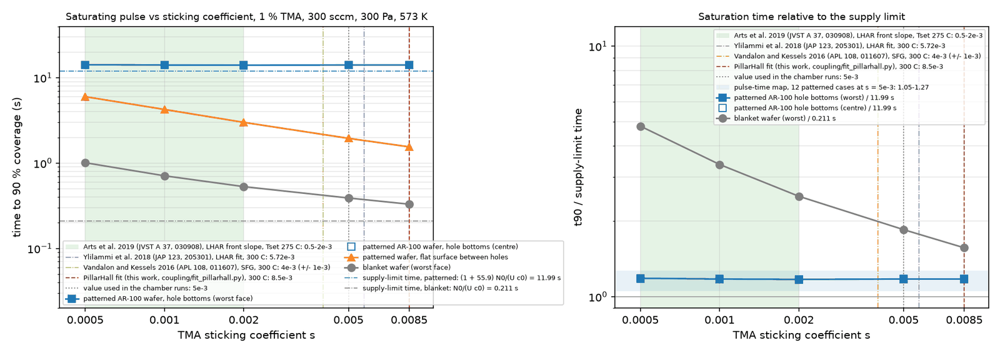
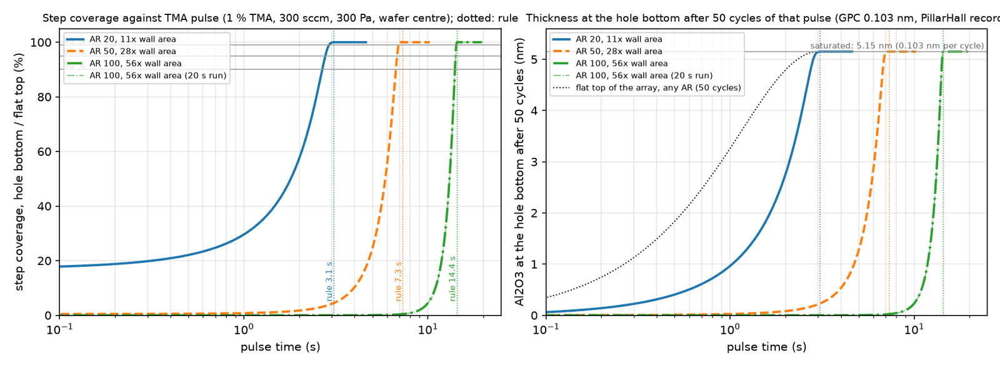
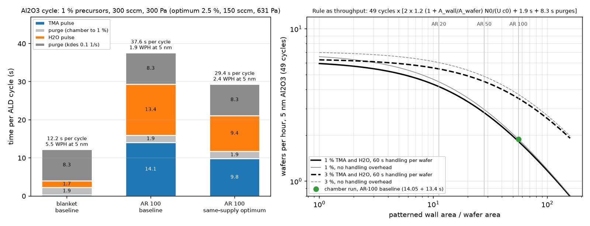
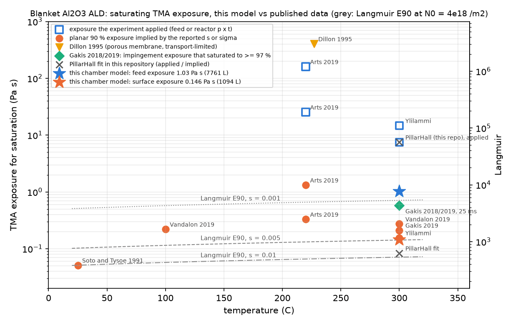
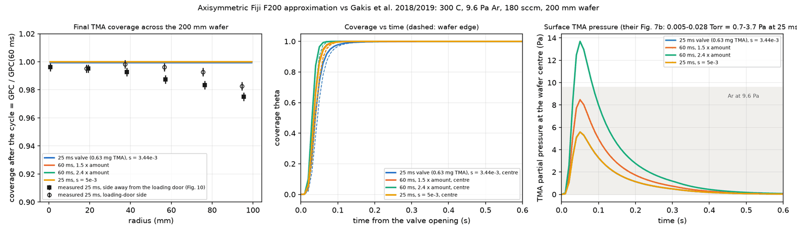
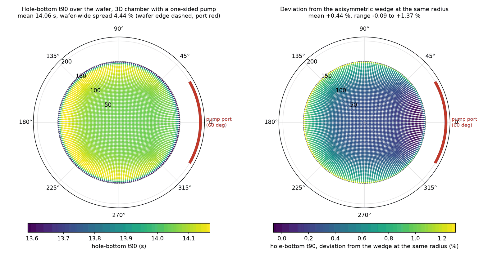

Every blanket-wafer ALD recipe hides a 40× under-dose.
A 3D-NAND wafer carries 56 times the surface area of the wafer under it, and all of it has to saturate in one pulse. This is a 300 mm showerhead ALD chamber in OpenFOAM in which every point on the wafer runs its own feature-scale model of a hole, coupled both ways to the gas. The answer it gives is one line of arithmetic, and it reproduces a measured saturation time on 940 m² of powder.
longer pulse for the patterned wafer than the blanket wafer it was tuned on: 14.05 s against 0.345 s
0.0×
wall area over wafer area for 100 nm holes at aspect ratio 100, 14 % open area, half the wafer patterned
0%
the rule holds within this over aspect ratios 20 to 100 and a 20× range of precursor feed (12 chamber runs, 1.05 to 1.27× the supply limit)
0.00
measured saturation time over supply-limit time for a fluidized-bed ALD run on 940 m² of silica gel (Argonne, 2022)
01 · The wafer is not blank
A chamber model in which every wafer face runs its own hole.
The chamber is an axisymmetric wedge of a 300 mm showerhead reactor: N₂ at 300 Pa and 573 K, 300 sccm, Reynolds number 0.045, a total-flux (Danckwerts) inlet so the TMA entering is exactly what the showerhead delivers. The wafer is a custom OpenFOAM boundary condition: on each of its 150 faces a one-dimensional Knudsen-diffusion, Langmuir-adsorption model of a 100 nm hole of aspect ratio 100 is advanced every time step from the local gas density, and its uptake is returned to the gas as a mixed boundary condition. Flat and hole fluxes blend by open-area fraction. Nothing is fitted to the chamber; the hole model was checked against Argonne's Machball code to 0.3 to 7 % and fitted to published lateral-structure thickness profiles.
The chamber and the pattern, explodedshowerhead, 300 mmwafer, 150 facesone hole model per faceoutlet at r = 200 mm
6,000 cells, 5° wedge, 15 mm gap (drawn 3× for legibility). The magnified patch is the pattern every face carries: 100 nm holes at 180 nm hexagonal pitch, half the wafer patterned. Drag to orbit.
Layer
Tool
What it does
Chamber flow
OpenFOAM v2606, simpleFoam
steady N₂ flow through the 15 mm gap; frozen for the pulse
Precursor pulse
scalarTransportFoam
TMA as a passive scalar with Chapman–Enskog diffusivity; Danckwerts inlet
Wafer
aldWallKinetics (C++)
langmuirSticking for blanket wafers, patternedSurface with one hole model per face
25-run response surface, Gaussian-process surrogates, Monte Carlo
Why two-way coupling matters
A patterned wafer is a sink 56 times stronger than a blanket one. One-way coupling (chamber first, hole after) misses the depletion of the gas over the wafer; here the hole uptake feeds back into the gas every time step, and the embedded model agrees with the standalone solver driven by the same face concentration to within 1 % at all times (the 14.05 s saturation is reproduced by both). The flat surface between the holes, which saturates in 0.35 s on a blanket wafer, takes 1.95 s here because it shares the precursor with the holes.
02 · One rule
The saturating pulse is 1.2 times one monolayer of supply to the patterned area.
Twelve patterned runs over aspect ratios 20, 50 and 100 and TMA fractions from 0.5 to 10 % all land between 1.05 and 1.27 times the time the showerhead needs to deliver one monolayer to the whole patterned area. Blanket wafers do not: they sit at 1.5 to 4.3 times, because on a blank wafer the sticking coefficient, not the supply, sets the time. Patterned wafers are supply-limited, and that is what makes the rule simple.
tpulse ≈ 1.2 × (1 + Awall/Awafer) × N0 / (U · c0) N₀ sites per m², U c₀ precursor molecules per m² per second at the showerhead
The pulse-time mapblanketAR 20AR 50AR 100supply limit
Time for the worst hole bottom on the wafer to reach 90 % coverage, 16 chamber runs. The thin blue ribbons are the supply limit (1 + Awall/Awafer) N₀/(U c₀) for each aspect ratio. Hover a point.
TMA fraction
blanket
AR 20
AR 50
AR 100
Saturating pulse in seconds, worst point on the wafer, from figures/pulse_time_map.csv. Doubling the hole depth doubles the pulse; doubling the precursor fraction halves it. Pressure, gap and carrier flow are missing from the rule because the runs below show they do not enter it.
What an under-dose looks like on the waferpulse cut at 8 s10 s12 s14 s
Hole-bottom coverage across the wafer if the pulse stops early. The deficit is nearly flat across the radius (edge lag 0.4 % at this operating point), because the whole wafer is starved by the same supply. Uniformity in supply-limited ALD is about when you stop, not where the gas goes.
02b · The wafer is not uniform either
Size the pulse on the densest region, not the wafer average.
Real device wafers mix dense arrays, open field and tiers of different depth. The boundary condition takes the hole density and aspect ratio as functions of radius, so two layouts were run: a dense AR-100 array in the centre with bare wafer beyond 100 mm, and a wafer whose hole depth ramps from AR 100 at the centre to AR 60 at the edge. The rule evaluated with the wafer-average wall area under-predicts both (5.1 s against 11.85 s needed; 10.6 s against 12.5 s). Evaluated with the local wall-area ratio of the most demanding region it is conservative by 15 to 21 %, the surplus being precursor the less-demanding neighbourhood feeds back laterally. The showerhead supplies molecules per unit area, so the local ratio is the one that counts.
Saturating pulse across the wafer for three layoutsuniform AR 100dense centre, bare edgeAR 100 → 60 ramp
Hole-bottom time to 90 % coverage against radius. A pattern boundary puts a 26 % saturation gradient inside the array (11.85 s at the centre, 8.75 s at its outer edge) where the uniform wafer varies by 0.4 %. The bare edge is itself 15 to 30 % slower than a blanket wafer because the array drains the gas. Hover.
Layout
wall ratio, wafer avg.
rule, wafer avg.
rule, local
needed
Uniform AR 100
55.9
14.4 s
14.4 s
14.05 s
Dense centre (r < 75 mm), bare beyond 100 mm
19.2
5.1 s
14.4 s
11.85 s
AR 100 at the centre → 60 at the edge
41.0
10.6 s
14.4 s
12.5 s
A 40 % tier-to-tier depth variation gives a 39 % spread in saturation time (12.5 s at AR 100, 7.6 s at AR 60): the recipe is set by the deepest tier and the shallower ones are over-dosed by their depth ratio. The uniform path of the boundary condition was regression-checked to the eighth digit after the change. Files: figures/pattern_layout.csv, reactor/make_layout_cases.py.
03 · Checked against measurement
Wafers and powders on one curve.
The same normalisation puts a measured fluidized-bed ALD run (Argonne, 10 g of silica gel, 940 m²) at 1.12 supply-limit times, inside the 1.05 to 1.27 band of the chamber runs, and orders the measured precursor utilization of a rotary-drum reactor with its loading. Precursor utilization against total reactive area spans five orders of magnitude on one curve. Separately, the hole model fits the published saturation profiles from 500 nm lateral test channels with a TMA sticking coefficient of 8.5 × 10⁻³.
Utilization = 1 / (saturation time over supply-limit time). Fluidized bed: Lu et al., JVST A 40 (2022). Rotary drum: Coile et al., JVST A 38, 052403 (2020), Table 2. Hover a point.
The hole model against measured profilesZenodo 3974438, 8 profilesfit, s = 8.5e-3s = 1e-3 and 1e-2
Al₂O₃ from TMA/H₂O at 300 °C, 500 cycles of 0.1 s, 500 nm lateral channel (Puurunen and Ylivaara, Aalto, CC BY 4.0). Fitted: s = 8.5 × 10⁻³ (×/÷ 1.5), 75 Pa TMA; rms 0.038 of the plateau. Hover.
The chamber runs use s = 5 × 10⁻³; Arts et al. report 0.5 to 2 × 10⁻³ from the same kind of structure. The patterned-wafer conclusions are supply-limited and do not move with s. The blanket-wafer numbers do, and are quoted with that caveat.
04 · Inside the hole
The front moves down one monolayer at a time.
One hole at the wafer centre, driven by the gas density the chamber model computes at its mouth. Coverage is a front: the mouth saturates in the first second, the front marches down as the supply arrives, and the bottom sees nothing until the walls above it are full. Stop the pulse at any time and the depth of the front is the depth of the film.
One hole, aspect ratio 100, cut open
t = 0.5 s
0% at the bottom 0% of depth coated
0.5 s: the mouth
On a blanket wafer this is already saturation. Here the first 3 % of the depth is coated and the gas over the wafer has dropped to a fraction of the showerhead value: the holes are draining it.
2 s: the flat surface is done
The surface between the holes reaches 90 % at 1.95 s, late by blanket standards because it competes with the holes. Inside, the front is a tenth of the way down.
5 s: one third
The front is at a third of the depth and moving at a steady pace: the rate at which the showerhead delivers molecules, divided by the wall area still to fill.
10 s: two thirds
Nothing about the chamber has changed; the front is simply where the supply integral puts it. Pressure or gap would not move it. Precursor fraction would.
14 s: the bottom reaches 90 %
14.05 s at the centre, 14.10 s at the worst point on the wafer. The rule said 14.4 s. On a blanket wafer the recipe would have stopped 13.7 s earlier.
05 · Which knobs matter
Precursor delivery sets the time. Pressure and carrier flow set what it costs.
A face-centred central composite design, 25 OpenFOAM runs over TMA fraction (0.5 to 3 %), carrier flow (150 to 600 sccm), pressure (100 to 1,000 Pa) and gap (10 to 25 mm), fitted in JMP: log₁₀ of the saturating pulse scales as x⁻¹·⁰ Q⁻⁰·⁸ p⁻⁰·¹², R² 0.993, and the gap term is not significant. Utilization of the delivered precursor runs from 51 to 97 %: pressure up and carrier flow down raise it, because a slower gas spends longer over the wafer. A Gaussian-process surrogate on the same 25 runs (MATLAB fitrgp, leave-one-out R² 0.999 on time and 0.988 on utilization) finds the operating point that uses the same precursor supply as the centre and saturates faster.
The response surface100 Pa316 Pa1,000 Pa
log₁₀ t₉₀ from the JMP fit at the centre pressure and gap, with every run as a sphere. Pressure moves a point off the surface by at most ×1.15; gap by less than the fit's residual. Hover a run.
Cost of ownership: precursor per wafer against pulse timethe 25 runssurrogate front, edge lag ≤ 5 %
Precursor use is 1 / utilization: how many times the stoichiometric minimum the showerhead had to deliver before the deepest hole saturated. Hover a run.
Operating point (GP surrogate)
TMA
carrier
pressure
gap
pulse
edge lag
utilization
Centre of the design
1.22 %
300 sccm
316 Pa
17.5 mm
11.6 s
−0.2 %
85 %
Same precursor supply, edge lag ≤ 5 %, fastest
2.51 %
150 sccm
631 Pa
10 mm
9.8 s
0.9 %
94 %
Fastest anywhere in the box, edge lag ≤ 5 %
3.00 %
600 sccm
1,000 Pa
10 mm
2.4 s
1.0 %
85 %
Monte Carlo on the rule's one uncertain constant, the site density N₀ (log-normal, ×/÷ 1.25, 10,000 draws): the 11.9 s centre-point pulse carries a 90 % band of 8.2 to 17.2 s. That band, not the chamber geometry, is what a recipe transfer has to absorb. Reports: figures/doe_rsm_report.txt, figures/doe_gp_report.txt.
06 · Try it
Your wafer, your chamber, the rule and the surrogate.
The rule needs the pattern and the showerhead supply. The surrogate is the Gaussian process fitted to the 25 chamber runs, evaluated here in the browser from the exported hyperparameters; it is only meaningful inside the design box, and the page says so when you leave it.
—wall area / wafer area
—one monolayer of supply, s
—rule: saturating pulse for the deepest hole, s (1.2 × supply time)
—surrogate: pulse, s (GP on 25 runs; ×/÷ sd shown)
—surrogate: precursor utilization
—surrogate: centre-to-edge lag, %
—precursor delivered per saturating pulse, monolayers of the patterned area
Same arithmetic as python -m aldconf rule … and python -m aldconf surrogate … in the repository. U is the showerhead face velocity from the carrier flow at the chamber pressure and temperature; c₀ is the TMA number density at the inlet.
07 · Water, plasma, spatial
The rule has consequences past the TMA pulse.
Water: same pulse, 50× less reactivekdes 00.1 /s1 /s10 /s
On the patterned wafer the H₂O half-cycle (s = 10⁻⁴) saturates in 13.4 s against 14.05 s for TMA: supply, not kinetics, again. With reversible adsorption above about 0.3 /s the surface cannot reach 90 % at 1 % H₂O, and the desorbing water keeps the exhaust wet through the purge.
Plasma: the recombination ceilinglargest AR reached in 5 sAR 100
Radicals lost on every wall collision cannot be bought back with dose: at a recombination probability above about 3 × 10⁻³, aspect ratio 100 is unreachable in any exposure. Measured values for O on SiO₂ and TiO₂ sit near 6 × 10⁻⁵ (Arts et al.).
Temporal against spatial ALDtemporal, 1 % and 3 %spatial, zone 10×30×100×
Cycle time from the rule for a temporal tool (two half-cycles plus two 0.5 s purges) and for a spatial tool whose precursor zone runs at an assumed 10 to 100× the showerhead flux. The zone flux is assumed, not measured; the shape of the comparison is not.
08 · What does not move it, and what is not settled
Nine things that were supposed to matter.
Saturating pulse for the AR-100 wafer under every idealization removedwithin one write interval of 14.05 swater half-cycle
Edge ring, wafer temperature at fixed sccm and fraction, and hole diameter at fixed wall area each change the saturating pulse by less than one write interval (0.05 s). Hover a bar.
Open items, stated
The TMA sticking coefficient fitted here (8.5 × 10⁻³) is higher than Arts et al.'s 0.5 to 2 × 10⁻³; the chamber runs used 5 × 10⁻³. The water model is single-site with one desorption constant. The spatial-ALD comparison rests on an assumed zone flux. The chamber is a wedge; azimuthal showerhead non-uniformity is not in it. Every one of these is listed with the run that would close it in paper/assumptions.md.
What the rule is not
It is not a kinetics model: on a blanket wafer it under-predicts the pulse by 1.5 to 4×, because there the sticking coefficient sets the time. It applies when the wafer's wall area is large enough that the chamber, not the surface, is the bottleneck, which is every production wafer with a 3D array on it.
09 · Reproduce it
Every number from a script, on a laptop.
git clone https://github.com/Soham-ChemE/ald-conformality.git && cd ald-conformality
python3.12 -m venv .venv && .venv/bin/pip install -e . && PYTHONPATH=src .venv/bin/python -m pytest -q tests
# chamber: OpenFOAM v2606 (gerlero/openfoam-app on Apple silicon), then
cd reactor/lib/aldWallKinetics && wmake && cd ../.. && ./Allrun # steady flow, blanket pulse, Langmuir wafer
python sweep_pattern_map.py && python doe_patterned.py # the 16-run map and the 25-run DOE
python ../analysis/make_doe_jsl.py && ../scripts/run_jsl.sh ../analysis/doe_rsm.jsl # JMP response surface
matlab -batch "run('../analysis/doe_gp.m')" # MATLAB GP, optimum, Monte Carlo
python ../docs/build_assets.py # this page's data and figures
The validation data (Zenodo 3974438) ships in data/; the Argonne numbers are quoted from the papers. CLAIMS.md maps every number on this page and in the paper to the file that produces it. The paper: draft 0.9, LaTeX in paper/.
11 · The reviewer's questions, answered with runs
Sticking coefficient, fab units, chamber-scale checks, a full 3D chamber.
Four questions any reviewer or process engineer would ask, each answered with new runs rather than argument. The figures below are the repository's own plots; every number in their captions traces to a file in CLAIMS.md.
Does the rule depend on the sticking coefficient?

No. Across s = 5 × 10⁻⁴ to 8.5 × 10⁻³, the whole span of published TMA values plus this repository's PillarHall fit, the AR-100 wafer saturates in 14.00 to 14.20 s, 1.17 to 1.18× the supply limit at 84 to 85 % utilization. The blanket wafer (0.33 to 1.01 s, about s⁻⁰·⁴) and the flat surface between the holes (1.55 to 6.0 s) carry a factor-3 uncertainty; the rule and the map do not. Nine new chamber runs, figures/sticking_sensitivity.csv.
In fab units: step coverage, thickness, cycle time

The rule's pulse gives 99 % step coverage, not just 90 %, because the saturation front is 0.3 s wide at every aspect ratio. Fifty cycles of a blanket recipe leave 1.4 nm of a 5 nm film on top of an AR-100 array and nothing at the bottom. figures/step_coverage_table.csv.
Purge and throughput

The purge is not the hole's doing: a 10 µm hole empties in 14 µs by Knudsen diffusion, the chamber reaches 1 % of the pulse-end signal in 1.9 s, and desorbing water can hold the exhaust up for 8 s at a desorption constant of 0.1 /s. An Al₂O₃ cycle is 12 s on a blanket wafer and 38 s on the product wafer: 5.5 against 1.9 wafers per hour for 5 nm. Above a wall-area ratio of about 10, throughput falls as 1/(1 + Awall/Awafer) and precursor fraction is the only knob that moves it. The point is the chamber run.
Does the blanket number sit where published data sit?

On the like-for-like basis (the exposure the surface actually sees, 0.146 Pa·s, 1,090 L) the blanket wafer sits within a factor 1.8 of the three 300 °C sources with an explicit sticking coefficient (Vandalon, Gakis, Ylilammi). The feed exposure is 7× larger because the wafer draws the gas down, and published feed exposures are inflated the same way. figures/blanket_saturation_literature.csv.
A published reactor, reproduced where it can be

Gakis et al. (2018, 2019) ran 3D CFD of TMA/H₂O in a Fiji F200 and measured thickness maps. In an axisymmetric approximation of their reactor, the TMA exposure delivered per 25 ms pulse agrees with their CFD to 12 to 22 % (0.67 against 0.55 to 0.60 Pa·s) and the saturation state matches the measured growth per cycle. Their 2.4 % measured non-uniformity is not reproduced: it comes from an off-axis inlet, a loading-door purge and a 21 °C wafer temperature gradient that a single-inlet frozen-flow wedge cannot carry. Stated, not hidden.
What does a one-sided pump do that the wedge cannot see?

A full 3D chamber (106,000 cells, 60° pump port, 32 min for the pulse) with the same patterned wafer. The carrier flow is strongly one-sided (the port-side quadrant drains at 3× the axisymmetric speed) and the gas-side quantities follow at the 10 % level, but the saturation time integrates the supply: azimuthal spread 0.09 % at r = 50 mm, 0.96 % at 140 mm, worst point 14.17 s on the far side against 14.05 s in the wedge. A one-sided pump costs about 1 % of pulse time; the rule's 1.2 covers it.
10 · Layout to recipe
Give it your die map; it gives you the pulse.
Describe the wafer as concentric zones (hole diameter, aspect ratio, hole density) and the chamber as the showerhead supply. The tool runs the supply rule on each zone, sizes the recipe on the most demanding one, and shows how far the wafer-average rule would have under-dosed it. The expected band under the recipe is the lateral-feed margin measured in the two non-uniform chamber runs, not a model.
#
r in, mm
r out, mm
d, nm
AR
holes / m²
density 0 or AR 0 = bare field. Zones are axisymmetric rings; the wafer is 300 mm.
Chamber
Die-density map as CSV
—recipe pulse: local rule of the governing zone
—expected saturation with the lateral-feed margin
—wafer-average rule · under-dose
—under-dose factor, local / average
zone
r, mm
pattern
wall ratio
local rule, s
expected, s
a the rule is a supply limit and under-predicts a blanket surface (kinetics set the time there); b measured flat saturation of the bare field next to the dense array in the chamber run, 0.40–0.50 s against 0.35 s on a blanket wafer; c a zone next to a denser neighbour is starved, not fed (the ramp's last holes took 5.1 s against a 0.6 s local rule), so its own rule is not a prediction; it is covered by the recipe pulse.
Calibration and limits. The recipe pulse is the supply rule t = 1.2 (1 + A_wall/A_wafer) N₀ / (U c₀) evaluated with the wall-area ratio of the most demanding zone, the same arithmetic as the calculator above. The expected band multiplies it by 0.82–0.87, the ratio of measured saturation to local rule in the two non-uniform chamber runs (dense centre 11.85 / 14.39 s; AR ramp 12.50 / 14.36 s), and by 0.98 for a uniform wafer (14.05 / 14.39 s): a calibration on two runs, not a model of lateral transport. Zones are axisymmetric rings in a wedge chamber; azimuthal layout is not represented. The rule is validated for AR 20–100 and TMA 0.5–10 %; the tool warns outside that range but still computes. Files: paper/assumptions.md (Night 3, part 1), figures/pattern_layout.csv, assets/layout-tool.js.